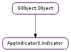

| static | new(id, icon_name, category) |
| static | new_with_path(id, icon_name, category, icon_theme_path) |
| build_menu_from_desktop(desktop_file, desktop_profile) | |
| get_attention_icon() | |
| get_attention_icon_desc() | |
| get_category() | |
| get_icon() | |
| get_icon_desc() | |
| get_icon_theme_path() | |
| get_id() | |
| get_label() | |
| get_label_guide() | |
| get_menu() | |
| get_ordering_index() | |
| get_secondary_activate_target() | |
| get_status() | |
| get_title() | |
| set_attention_icon(icon_name) | |
| set_attention_icon_full(icon_name, icon_desc) | |
| set_icon(icon_name) | |
| set_icon_full(icon_name, icon_desc) | |
| set_icon_theme_path(icon_theme_path) | |
| set_label(label, guide) | |
| set_menu(menu) | |
| set_ordering_index(ordering_index) | |
| set_secondary_activate_target(menuitem) | |
| set_status(status) | |
| set_title(title) |
| Name | Type | Flags | Description |
|---|---|---|---|
| attention-icon-desc | str | r/w | When the indicator is an attention mode this should describe the icon shown |
| attention-icon-name | str | r/w | If the indicator sets it’s status to ‘attention’ then this icon is shown. |
| category | str | r/w/c | The type of indicator that this represents. Please don’t use ‘other’. Defaults to ‘ApplicationStatus’. |
| connected | bool | r | Pretty simple, true if we have a reasonable expectation of being displayed through this object. You should hide your TrayIcon if so. |
| icon-desc | str | r/w | A description of the default icon that is shown for the indicator. |
| icon-name | str | r/w | The default icon that is shown for the indicator. |
| icon-theme-path | str | r/w | An additional place to look for icon names that may be installed by the application. |
| id | str | r/w/c | An ID that should be unique, but used consistently by this program and its indicator. |
| label | str | r/w | A label to provide dynamic information. |
| label-guide | str | r/w | To ensure that the label does not cause the panel to ‘jiggle’ this string should provide information on how much space it could take. |
| ordering-index | int | r/w | A way to override the default ordering of the applications by providing a very specific idea of where this entry should be placed. |
| status | str | r/w | Whether the indicator is shown or requests attention. Defaults to ‘Passive’. |
| title | str | r/w | A human readable way to refer to this application indicator in the UI. |
| Name | Parameters | Return | Description |
|---|---|---|---|
| connection-changed | bool | Signaled when we connect to a watcher, or when it drops away. | |
| new-attention-icon | Emitted when AppIndicator3.Indicator :attention-icon-name is changed | ||
| new-icon | when AppIndicator3.Indicator :icon-name is changed | ||
| new-icon-theme-path | str | Signaled when there is a new icon set for the object. | |
| new-label | str, str | Emitted when either AppIndicator3.Indicator :label or AppIndicator3.Indicator :label-guide are changed. | |
| new-status | str | Emitted when AppIndicator3.Indicator :status is changed | |
| scroll-event | int, int | Signaled when the AppIndicator3.Indicator receives a scroll event. |
| Name | Type | Access |
|---|---|---|
| parent | GObject.Object | r |
| priv | AppIndicator3.IndicatorPrivate | r |
Bases: GObject.Object
A application indicator represents the values that are needed to show a unique status in the panel for an application. In general, applications should try to fit in the other indicators that are available on the panel before using this. But, sometimes it is necissary.
Private fields
| Parameters: |
|
|---|---|
| Returns: | A pointer to a new AppIndicator3.Indicator object. |
| Return type: |
Creates a new AppIndicator3.Indicator setting the properties: AppIndicator3.Indicator :id with id, AppIndicator3.Indicator :category with category and AppIndicator3.Indicator :icon-name with icon_name.
| Parameters: |
|
|---|---|
| Returns: | A pointer to a new AppIndicator3.Indicator object. |
| Return type: |
Creates a new AppIndicator3.Indicator setting the properties: AppIndicator3.Indicator :id with id, AppIndicator3.Indicator :category with category, AppIndicator3.Indicator :icon-name with icon_name and AppIndicator3.Indicator :icon-theme-path with icon_theme_path.
| Parameters: |
|---|
This function allows for building the Application Indicator menu from a static desktop file.
| Returns: | The current attention icon name. |
|---|---|
| Return type: | str |
Wrapper function for property AppIndicator3.Indicator :attention-icon-name.
| Returns: | The current attention icon description. |
|---|---|
| Return type: | str |
Wrapper function for property AppIndicator3.Indicator :attention-icon-desc.
| Returns: | The current category. |
|---|---|
| Return type: | AppIndicator3.IndicatorCategory |
Wrapper function for property AppIndicator3.Indicator :category.
| Returns: | The current icon name. |
|---|---|
| Return type: | str |
Wrapper function for property AppIndicator3.Indicator :icon-name.
| Returns: | The current icon description. |
|---|---|
| Return type: | str |
Wrapper function for property AppIndicator3.Indicator :icon-desc.
| Returns: | The current icon theme path. |
|---|---|
| Return type: | str |
Wrapper function for property AppIndicator3.Indicator :icon-theme-path.
| Returns: | The current ID |
|---|---|
| Return type: | str |
Wrapper function for property AppIndicator3.Indicator :id.
| Returns: | The current label. |
|---|---|
| Return type: | str |
Wrapper function for property AppIndicator3.Indicator :label.
| Returns: | The current label guide. |
|---|---|
| Return type: | str |
Wrapper function for property AppIndicator3.Indicator :label-guide.
| Returns: | A Gtk.Menu object or None if one hasn’t been set. |
|---|---|
| Return type: | Gtk.Menu |
Gets the menu being used for this application indicator. Wrapper function for property AppIndicator3.Indicator :menu.
| Returns: | The current ordering index. |
|---|---|
| Return type: | int |
Wrapper function for property AppIndicator3.Indicator :ordering-index.
| Returns: | A Gtk.Widget object or None if none has been set. |
|---|---|
| Return type: | Gtk.Widget |
Gets the menuitem being called on secondary-activate event.
| Returns: | The current status. |
|---|---|
| Return type: | AppIndicator3.IndicatorStatus |
Wrapper function for property AppIndicator3.Indicator :status.
| Returns: | The current title. |
|---|---|
| Return type: | str |
Gets the title of the application indicator. See the function AppIndicator3.Indicator.set_title () for information on the title.
| Parameters: | icon_name (str) – The name of the attention icon to set for this indicator |
|---|
Wrapper for AppIndicator3.Indicator.set_attention_icon_full () with a None description.
| Parameters: |
|---|
Wrapper function for property AppIndicator3.Indicator :attention-icon-name.
| Parameters: | icon_name (str) – The icon name to set. |
|---|
Wrapper function for AppIndicator3.Indicator.set_icon_full () with a None description.
| Parameters: |
|---|
Sets the default icon to use when the status is active but not set to attention. In most cases, this should be the application icon for the program.
Wrapper function for property AppIndicator3.Indicator :icon-name and AppIndicator3.Indicator ::icon-desc.
| Parameters: | icon_theme_path (str) – The icon theme path to set. |
|---|
Sets the path to use when searching for icons.
| Parameters: |
|---|
This is a wrapper function for the AppIndicator3.Indicator :label and AppIndicator3.Indicator :guide properties. This function can take None as either label or guide and will clear the entries.
| Parameters: | menu (Gtk.Menu or None) – A Gtk.Menu to set |
|---|
Sets the menu that should be shown when the Application Indicator is clicked on in the panel. An application indicator will not be rendered unless it has a menu.
Wrapper function for property AppIndicator3.Indicator :menu.
| Parameters: | ordering_index (int) – A value for the ordering of this app indicator |
|---|
Sets the ordering index for the app indicator which effects the placement of it on the panel. For almost all app indicator this is not the function you’re looking for.
Wrapper function for property AppIndicator3.Indicator :ordering-index.
| Parameters: | menuitem (Gtk.Widget or None) – A Gtk.Widget to be activated on secondary activation |
|---|
Set the menuitem to be activated when a secondary activation event (i.e. a middle-click) is emitted over the AppIndicator3.Indicator icon/label.
The menuitem can be also a complex Gtk.Widget, but to get activated when a secondary activation occurs in the #Appindicator, it must be a visible and active child (or inner-child) of the AppIndicator3.Indicator :menu.
Setting menuitem to None causes to disable this feature.
| Parameters: | status (AppIndicator3.IndicatorStatus) – The status to set for this indicator |
|---|
Wrapper function for property AppIndicator3.Indicator :status.
| Parameters: | title (str or None) – Title of the app indicator |
|---|
Sets the title of the application indicator, or how it should be referred in a human readable form. This string should be UTF-8 and localized as it expected that users will set it.
In the Unity desktop the most prominent place that this is show will be in the HUD. HUD listings for this application indicator will start with the title as the first part of the line for the menu items.
Setting title to None removes the title.